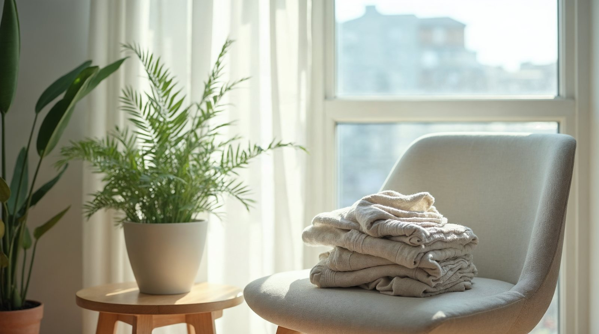
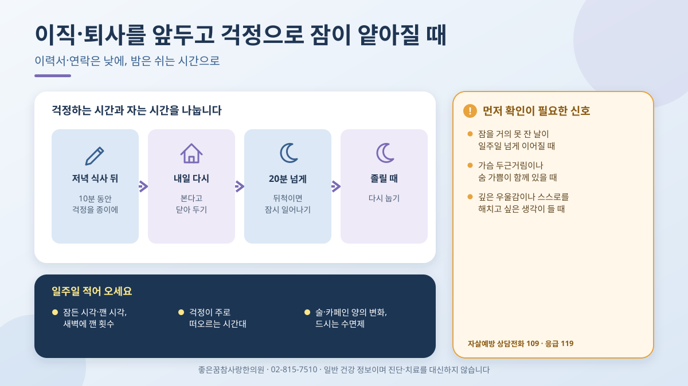

이종호 한의사 감수좋은꿈참사랑한의원 대표원장 (한의사 면허번호 19769)발행 2026-11-23 · 수정 2026-11-26
이 글의 차례
- 왜 이런 불편이 생길 수 있나요
- 왜 결정을 앞두면 밤에 생각이 더 커지나요
- 걱정 때문인지, 다른 원인이 겹친 것인지 어떻게 구분하나요
- 먼저 이렇게 여쭙니다
- 일상에서 먼저 해 볼 수 있는 것
- 걱정 적기는 이렇게 해 보세요
- 몸의 긴장을 푸는 저녁 순서
- 상황별 예시
- 스스로 점검해 보세요
- 새벽에 깨서 생각이 이어질 때는 어떻게 하나요
- 가까운 사람과는 어떻게 나누면 좋을까요
- 퇴사 뒤 쉬는 기간에는 리듬을 어떻게 지킬까요
- 낮 동안 몸을 돌보는 작은 습관
- 잠 기록은 이렇게 적어 보세요
- 한의원에서 함께 살필 수 있는 경우
- 상담 전에 알아 두시면 좋은 것
- 얼마나 지켜보고 언제 상담할까요
- 이렇게 기록해 오시면 상담이 쉬워집니다
- 이런 증상은 먼저 확인이 필요합니다
- 관련 글
퇴사 날짜가 정해졌거나 이직 결과를 기다리는 시기에는 낮에는 괜찮다가도 밤이 되면 생각이 많아집니다. 누우면 계산과 계획이 꼬리를 물고, 새벽에 깨서 같은 생각을 이어 가기도 합니다. 걱정을 다루는 시간과 잠의 시간을 나누는 연습이 첫걸음입니다.
왜 이런 불편이 생길 수 있나요
- 결정되지 않은 일은 머리가 계속 붙잡고 있어 누운 뒤에도 생각이 쉽게 멈추지 않습니다.
- 긴장하면 몸이 깨어 있는 쪽으로 기울어 심장이 빨리 뛰고 몸이 데워진 느낌이 들 수 있습니다.
- 이 시기에는 야근과 송별 모임, 면접 준비로 잠드는 시각이 들쑥날쑥해지기 쉽습니다.
- 술이나 카페인이 늘면 잠이 얕아지고 새벽에 깨기 쉬워집니다.
왜 결정을 앞두면 밤에 생각이 더 커지나요
낮에는 일과 사람에 둘러싸여 걱정이 뒤로 밀려나 있습니다. 그러다 불을 끄고 누우면 주의를 빼앗던 것들이 사라지고, 미뤄 둔 생각이 한꺼번에 앞으로 나옵니다. 밤에 걱정이 유난히 커 보이는 것은 그 때문인 경우가 많습니다.
게다가 밤에는 몸도 지쳐 있어 같은 문제도 더 무겁고 막막하게 느껴집니다. 아침에 다시 보면 별것 아니었던 걱정이 새벽 세 시에는 큰일처럼 보이는 경험, 많은 분이 해 보셨을 겁니다. 그래서 밤에는 결론을 내리지 않기로 미리 약속해 두는 것이 도움이 됩니다.
이직과 퇴사는 수입, 경력, 인간관계가 한꺼번에 걸린 일이라 생각이 한 갈래로 끝나지 않습니다. 하나를 따지다 보면 다른 걱정이 따라 나오고, 그렇게 꼬리를 무는 동안 몸은 깨어 있는 쪽으로 기울어 심장이 빨리 뛰고 손발이 데워집니다.
걱정 때문인지, 다른 원인이 겹친 것인지 어떻게 구분하나요
이 시기의 얕은 잠이 모두 걱정 때문만은 아닙니다. 저는 잠이 흔들리기 시작한 시점과 그 무렵 달라진 생활을 함께 나눠 봅니다.
- 걱정이 중심이라면 누운 뒤 생각이 이어지는 날이 많고, 결과 발표나 퇴사일처럼 정해진 날이 지나면 잠이 조금씩 돌아오는 흐름이 보이는 경우가 많습니다.
- 송별 모임과 술자리가 늘었다면 걱정보다 술이 새벽 깸을 만드는 몫이 클 수 있습니다.
- 인수인계와 면접 준비로 잠자는 시간 자체가 줄었다면, 잠이 얕다기보다 모자란 것일 수 있습니다.
- 걱정이 이 일에만 머물지 않고 여러 일로 번지며 몇 달째 이어졌다면, 이번 일은 계기일 뿐 오래된 긴장이 함께 있을 수 있습니다.
- 퇴사 뒤 늦게 자고 늦게 일어나는 날이 이어졌다면 걱정보다 리듬이 밀린 것이 잠을 흔드는 이유일 수 있습니다.
- 새 직장에 들어간 뒤 첫 몇 주에 잠이 얕다면, 새 업무와 사람에 익숙해지는 긴장이 실려 있는 경우가 많아 출근 리듬이 자리 잡는 흐름을 함께 지켜봅니다.
먼저 이렇게 여쭙니다
- 걱정이 주로 어느 시간대에 떠오르나요?
- 잠들기 전에 계산이나 계획을 머릿속으로 계속 돌리게 되나요?
- 새벽에 깨서 다시 같은 생각이 이어지나요?
- 낮에 소화가 안 되거나 어깨가 굳는 느낌이 있나요?
- 이 시기 전후로 식사와 술, 카페인 양이 달라졌나요?
일상에서 먼저 해 볼 수 있는 것
- 저녁 식사 뒤 10분 동안 걱정거리를 종이에 적고 내일 다시 본다고 닫아 두기
- 이력서나 연락은 밤 시간을 피해 낮에 정해 둔 시각에 하기
- 잠자리에서 20분 넘게 뒤척이면 잠시 일어나 어두운 곳에서 쉬다가 졸릴 때 다시 눕기
- 쉬는 날에도 일어나는 시각을 크게 바꾸지 않기
- 늦은 시각의 술이나 카페인으로 버티지 않기
- 정해야 할 일은 '언제까지 알아보고 언제 정한다'처럼 날짜를 달력에 적어 두기
- 메일이나 채용 결과 확인은 하루 두 번처럼 횟수를 정해 두고 잠자리에는 휴대폰을 두지 않기
- 점심 뒤와 퇴근 직후 어깨를 귀 쪽으로 끌어올렸다가 툭 떨어뜨리기를 다섯 번쯤 하기
- 가슴이 답답할 때 내쉬는 숨을 들이쉬는 숨보다 길게 하는 호흡을 5분쯤 해 보기(어지러우면 바로 멈추기)
걱정 적기는 이렇게 해 보세요
걱정 적기는 생각을 없애는 방법이 아니라, 생각을 둘 자리를 따로 마련해 주는 방법입니다. 저녁 식사 뒤처럼 잠자리와 떨어진 시간에 10분쯤 종이와 펜을 준비합니다.
- 1. 지금 마음에 걸리는 일을 떠오르는 대로 모두 적습니다. 순서나 문장은 신경 쓰지 않아도 됩니다.
- 2. 적은 것 가운데 내가 할 수 있는 일과 기다릴 수밖에 없는 일을 나눠 표시합니다.
- 3. 할 수 있는 일에는 '내일 점심에 전화하기'처럼 다음 한 걸음과 날짜만 붙입니다.
- 4. 기다릴 수밖에 없는 일 옆에는 '결과는 금요일에 나온다'처럼 언제 다시 볼지만 적습니다.
- 5. 종이를 접어 서랍에 넣고, 오늘 걱정은 여기까지라고 스스로에게 말해 둡니다.
이렇게 해 두면 누운 뒤 생각이 떠올라도 '그건 종이에 적어 두었지' 하고 내려놓기가 조금 쉬워집니다. 처음 며칠은 변화가 잘 느껴지지 않을 수 있으니 2주쯤 이어 가 보세요.
몸의 긴장을 푸는 저녁 순서
생각은 마음에서 시작되지만 그 무게는 어깨와 턱, 명치에 남습니다. 저녁에 아래 순서를 15분쯤 이어 가면 몸이 먼저 쉬는 쪽으로 기울기 쉽습니다.
- 미지근한 물로 씻으며 목 뒤와 어깨에 물을 조금 오래 흘려 줍니다.
- 앉은 자리에서 어금니를 살짝 떼고 혀를 입천장에 가볍게 붙여 턱의 힘을 뺍니다.
- 손바닥을 명치에 얹고 숨을 내쉴 때 손이 가라앉는 느낌을 따라가 봅니다.
- 조명을 한 단계 낮추고, 채용 공고나 메일 대신 종이책이나 잔잔한 음악으로 마무리합니다.

상황별 예시
- 예를 들어 이직할 회사의 최종 결과를 기다리는 직장인이 밤마다 메일함을 새로 고치다 새벽 1~2시에 잠드는 경우, 메일 확인은 점심과 퇴근 직후 두 번으로 줄이고 휴대폰은 거실에서 충전해 잠자리와 떨어뜨려 봅니다.
- 예를 들어 퇴사 날짜가 정해진 뒤 인수인계와 송별 모임이 겹쳐 술자리가 일주일에 서너 번으로 늘어난 경우, 꼭 가야 할 자리만 고르고 술자리 다음 날에도 일어나는 시각은 평소대로 지켜 리듬이 크게 흔들리지 않게 합니다.
- 예를 들어 육아휴직 뒤 복직과 퇴사 사이에서 고민하는 분이 아이를 재운 뒤에야 생각할 틈이 생겨 밤늦게까지 계산을 이어 가는 경우, 고민은 낮 시간에 짧게라도 따로 떼어 두고 아이가 잠든 뒤에는 몸을 쉬는 시간으로 남겨 두는 편이 좋습니다.
스스로 점검해 보세요
- 누운 뒤 30분 넘게 이직이나 퇴사 생각을 이어 가는 날이 일주일에 세 번 이상이다.
- 새벽에 깨면 곧바로 같은 걱정이 떠올라 다시 잠들기 어렵다.
- 잠들기 직전까지 채용 공고나 메일을 확인한다.
- 이 시기 들어 술이나 커피 양이 눈에 띄게 늘었다.
- 어깨와 목이 늘 굳어 있거나 이를 악물고 있는 것을 알아차린다.
- 입맛이 떨어져 끼니를 자주 거른다.
- 정해 둔 기한 없이 매일 밤 결론을 내리려고 애쓴다.
새벽에 깨서 생각이 이어질 때는 어떻게 하나요
새벽에 눈이 떠지면 바로 시계를 보고 남은 시간을 계산하게 됩니다. 그 순간부터 머리가 일하기 시작하니, 시계는 보지 않고 눈을 감은 채 몸이 닿아 있는 이불의 감촉부터 느껴 보세요.
생각이 떠오르면 억지로 밀어내기보다 '아, 또 그 생각이구나' 하고 이름만 붙여 두는 방법이 있습니다. 붙잡고 따지기 시작하면 길어지지만, 알아차리고 지나가게 두면 생각의 힘이 조금씩 약해지는 경우가 많습니다.
20분쯤 지나도 잠이 오지 않으면 잠시 일어나 거실에서 조명을 낮춘 채 앉아 있다가 졸릴 때 다시 눕습니다. 이때 휴대폰으로 채용 소식을 확인하면 다시 머리가 깨어나니 손에 들지 않으시길 권합니다.
가까운 사람과는 어떻게 나누면 좋을까요
혼자 품고 있는 걱정은 밤에 더 커지기 쉽습니다. 믿을 만한 가족이나 친구에게 지금 무엇이 가장 마음에 걸리는지 낮 시간에 이야기해 보세요. 해결책을 듣지 않아도 말로 꺼내는 것만으로 생각이 정리되는 경우가 많습니다.
다만 잠들기 직전에 진로 이야기를 길게 나누면 서로 마음이 들떠 함께 잠을 설치기 쉽습니다. 중요한 상의는 저녁 식사 무렵까지로 정해 두고, 잠자리에서는 오늘 있었던 가벼운 이야기로 마무리하는 편이 좋습니다.
퇴사 뒤 쉬는 기간에는 리듬을 어떻게 지킬까요
퇴사하고 나면 출근이라는 틀이 사라져 하루가 쉽게 늘어집니다. 며칠은 그동안 못 잔 잠을 채우는 시간이 되어도 괜찮지만, 기상 시각이 매일 조금씩 밀리면 어느새 새벽 서너 시에 잠드는 생활이 되기도 합니다.
일어나는 시각과 아침 식사만큼은 회사 다닐 때와 비슷하게 두시길 권합니다. 오전에 바깥에서 30분쯤 걷거나 장을 보는 일정을 넣어 두면 하루의 시작이 분명해집니다.
쉬는 기간에도 구직이나 준비할 일이 있다면 오전과 오후에 정해 둔 시간에만 하고, 저녁은 쉬는 시간으로 남겨 두세요. 일하는 시간과 쉬는 시간이 섞이면 밤에도 머리가 쉬지 못합니다.
낮 동안 몸을 돌보는 작은 습관
- 점심은 거르지 말고 정해 둔 시각에 드세요. 걱정이 많은 시기에는 입맛이 떨어져 끼니를 건너뛰기 쉬운데, 그러면 저녁에 몰아 먹고 속이 무거운 채 눕게 됩니다.
- 하루 한 번은 바깥에서 20분 이상 걸어 보세요. 몸을 움직이는 동안에는 생각의 속도도 조금 느려집니다.
- 커피는 오후 두 시 이전으로 정해 두세요. 긴장한 몸에 카페인이 더해지면 밤까지 가슴이 두근거리는 분이 있습니다.
- 면접이나 중요한 통화를 마친 뒤에는 5분쯤 창밖을 보며 숨을 고르는 시간을 두세요. 긴장을 그때그때 내려놓아야 밤까지 쌓이지 않습니다.
잠 기록은 이렇게 적어 보세요
아침에 한 줄이면 충분합니다. 예를 들어 '0시 누움, 잠들기까지 50분, 4시에 깨서 면접 생각, 다시 잠듦, 7시 기상, 개운함 10점 중 3점'처럼 적어 봅니다.
여기에 전날 술이나 커피를 마셨는지, 걱정 적기를 했는지만 덧붙이면 어떤 날 잠이 편했는지가 보입니다. 결과 발표 같은 큰일이 있었던 날은 따로 표시해 두면 흐름을 읽기 쉽습니다. 기록을 보며 스스로를 탓하기보다, 어떤 날 조금 편했는지를 찾는 데 쓰시면 좋겠습니다.

한의원에서 함께 살필 수 있는 경우
- 걱정이 이어져 잠들기까지 오래 걸리는 경우 긴장의 정도와 수면 시각을 함께 살핍니다.
- 새벽에 깨서 다시 잠들기 어려운 경우 식사와 소화, 몸의 열감을 함께 살핍니다.
- 입맛이 줄거나 어깨와 목이 굳는 경우 생활 전체의 피로를 함께 살핍니다.
좋은꿈참사랑한의원에서는 첫 방문 때 맥부터 짚고, 맥을 짚으면서 걱정이 떠오르는 시각과 잠의 모양, 식사와 술·카페인 변화를 여쭙습니다. 회사 사정은 편하신 만큼만 말씀하셔도 됩니다. 필요하다고 판단될 때 혀와 배를 살펴 몸의 긴장과 소화 상태를 확인하고, 어깨와 목이 많이 굳어 있다면 움직임도 함께 봅니다.
그 뒤 걱정 적기와 기상 시각 지키기처럼 생활에서 해 볼 것을 정하고, 필요하면 침이나 한약 상담을 이어 갑니다. 적어 오신 잠 기록은 다음 진료 때 함께 봅니다. 평일은 저녁 8시까지 진료해 퇴근 뒤 들르기도 합니다.
상담 전에 알아 두시면 좋은 것
한약 상담을 하게 되면 지금 드시는 약과 영양제를 먼저 여쭙고 확인한 뒤에 정합니다. 처방받은 수면제나 신경안정제를 드시고 있다면 임의로 끊거나 줄이지 마시고, 진료 때 그대로 말씀해 주세요. 임신 중이거나 임신 가능성이 있다면 먼저 알려 주시고, 산부인과와도 함께 상의하시길 권합니다.
이 시기에는 진료 시간을 내는 것조차 부담일 수 있습니다. 첫 방문 때는 가장 힘든 것 하나만 말씀하셔도 괜찮고, 나머지는 다음 진료에서 차근차근 이어서 여쭙습니다.
얼마나 지켜보고 언제 상담할까요
- 걱정 적기와 기상 시각 지키기를 2주쯤 이어 가며 잠드는 시간과 새벽에 깬 횟수를 적어 봅니다.
- 결과 발표나 퇴사일처럼 정해진 날이 지나면 며칠에서 1~2주 사이 잠이 돌아오는 분도 많아, 그 흐름을 지켜봅니다.
- 2주가 지나도 잠들기까지 30분 넘게 걸리거나 새벽에 깨는 날이 일주일에 세 번 이상이면 상담을 받아 보세요.
이렇게 기록해 오시면 상담이 쉬워집니다
- 일주일 정도의 잠든 시각, 깬 시각, 새벽에 깬 횟수
- 걱정이 주로 떠오르는 시간대
- 술·카페인 양의 변화
- 복용 중인 수면제나 신경안정제
이런 증상은 먼저 확인이 필요합니다
- 잠을 거의 자지 못한 날이 일주일 넘게 이어지는 경우
- 기분이 깊게 가라앉거나 스스로를 해칠 생각이 들면 ☎ 109로 바로 연락하세요.
이런 신호가 있으면 한의원보다 가까운 병원이나 응급실을 먼저 찾으세요.
관련 글
- 걱정이 많아서 잠이 안 올 때는 어떻게 살피나요?
- 일요일 저녁만 되면 출근 걱정에 가슴이 답답하고 잠이 안 올 때는 어떻게 하나요?
- 새벽에 자꾸 잠이 깨는 이유는 무엇이고, 어떤 점을 살펴보나요?

여쭙는 것
- 걱정이 주로 어느 시간대에 떠오르나요?
- 잠들기 전에 계산이나 계획을 머릿속으로 계속 돌리게 되나요?
- 새벽에 깨서 다시 같은 생각이 이어지나요?
생활에서 해 볼 것
- 저녁 식사 뒤 10분 동안 걱정거리를 종이에 적고 내일 다시 본다고 닫아 두기
- 이력서나 연락은 밤 시간을 피해 낮에 정해 둔 시각에 하기
- 잠자리에서 20분 넘게 뒤척이면 잠시 일어나 어두운 곳에서 쉬다가 졸릴 때 다시 눕기
한의원에서 함께 살필 것
- 걱정이 이어져 잠들기까지 오래 걸리는 경우 긴장의 정도와 수면 시각을 함께 살핍니다.
- 새벽에 깨서 다시 잠들기 어려운 경우 식사와 소화, 몸의 열감을 함께 살핍니다.
- 입맛이 줄거나 어깨와 목이 굳는 경우 생활 전체의 피로를 함께 살핍니다.
먼저 확인이 필요한 신호
- 잠을 거의 자지 못한 날이 일주일 넘게 이어지는 경우
- 기분이 깊게 가라앉거나 스스로를 해칠 생각이 들면 109로 바로 연락하세요.
한눈에 보는 표
| 구분 | 핵심 |
|---|---|
| 여쭙는 것 | 걱정이 주로 어느 시간대에 떠오르나요? 잠들기 전에 계산이나 계획을 머릿속으로 계속 돌리게 되나요? |
| 생활에서 해 볼 것 | 저녁 식사 뒤 10분 동안 걱정거리를 종이에 적고 내일 다시 본다고 닫아 두기 이력서나 연락은 밤 시간을 피해 낮에 정해 둔 시각에 하기 |
| 한의원에서 함께 살필 것 | 걱정이 이어져 잠들기까지 오래 걸리는 경우 긴장의 정도와 수면 시각을 함께 살핍니다. 새벽에 깨서 다시 잠들기 어려운 경우 식사와 소화, 몸의 열감을 함께 살핍니다. |
| 먼저 확인이 필요한 신호 | 잠을 거의 자지 못한 날이 일주일 넘게 이어지는 경우 기분이 깊게 가라앉거나 스스로를 해칠 생각이 들면 109로 바로 연락하세요. |
자주 묻는 질문
걱정을 적어 두면 정말 도움이 되나요?
머릿속에서 계속 도는 생각을 밖으로 꺼내 두면 밤에 덜 매달리게 된다는 분이 많습니다. 부담이 적어 해 볼 만한 방법입니다.
술을 한 잔 하고 자면 더 잘 자지 않나요?
잠이 드는 데는 쉬워 보여도 밤 후반에 자주 깨고 잠이 얕아지는 분이 많습니다.
잠을 못 잔 다음 날은 낮잠으로 보충해도 되나요?
20~30분 안쪽의 짧은 낮잠은 괜찮은 경우가 많지만, 길게 자면 그날 밤 잠들기가 더 어려워질 수 있습니다.
새벽에 깨서 생각이 이어지면 어떻게 하나요?
시계를 보지 말고 천천히 숨을 내쉬며 몸의 힘을 빼 보세요. 생각이 멈추지 않으면 머리맡 메모지에 한 줄 적어 두고 다시 눕는 방법도 있습니다.
퇴사한 뒤에는 늦게 자고 늦게 일어나도 괜찮을까요?
며칠 쉬는 것은 괜찮지만 기상 시각이 계속 밀리면 새 일을 시작할 때 리듬을 되돌리기 어려울 수 있습니다. 일어나는 시각과 아침 식사 시각만큼은 평소와 크게 다르지 않게 두시길 권합니다.
진로 고민도 진료 때 이야기해도 되나요?
결정은 본인이 내리시는 것이고, 한의원에서는 그 시기의 잠과 소화, 몸의 긴장을 함께 살핍니다. 편하신 만큼만 말씀하셔도 진료에 충분합니다.
좋은꿈참사랑한의원은 재진 때 지난번 이야기부터 이어서 여쭙니다. 진료시간과 예약은 오시는 길에서 확인하세요.
어디서 상담받을 수 있나요?
좋은꿈참사랑한의원은 서울 동작구 만양로2길 2 신성빌딩 3층·5층(서울 동작구 상도동, 7호선 상도역 3번 출구 근처)에 있습니다. 한의사 3명(이종호 대표원장, 조영기 수석진료원장, 정원영 진료원장)이 진료합니다. 진료시간은 평일 09:30~20:00(점심 13:00~14:00), 토·일·공휴일 09:30~15:00이며, 방문 전 전화로 확인을 권합니다. 예약은 네이버 예약, 카카오톡 상담, 전화 02-815-7510로 받습니다.
이 글은 일반적인 건강 정보이며 개인의 진단이나 치료를 대신하지 않습니다. 증상이 있거나 복용 중인 약이 있다면 진료를 통해 확인하세요. 치료 효과는 개인마다 다를 수 있습니다.
작성 기준: 일반적으로 알려져 있는 건강 정보를 참고해 정리했습니다(대표원장 감수). 증상 기록은 1~2주 동안 하루 1회, 비슷한 시간에 적어 오시면 지난 상태와 비교하기 쉽습니다.